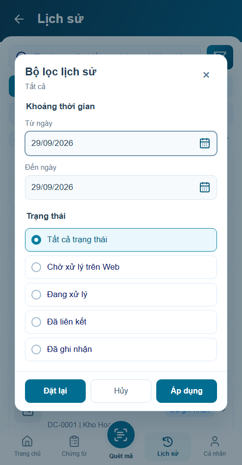
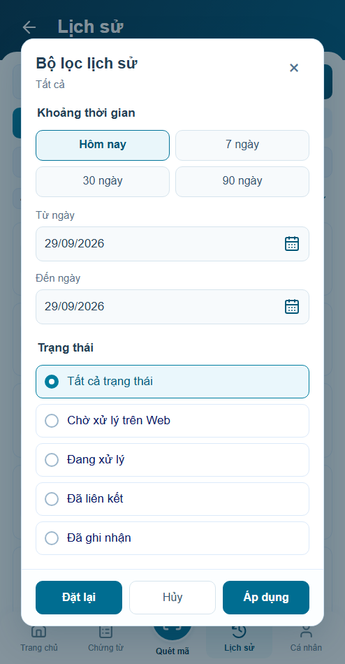
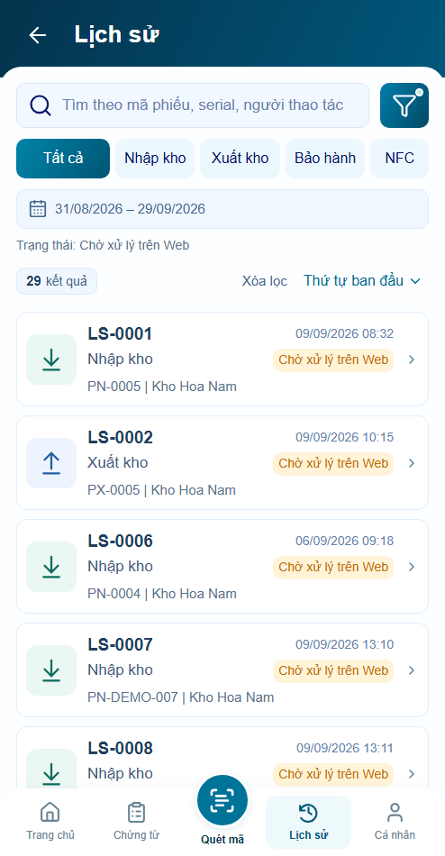
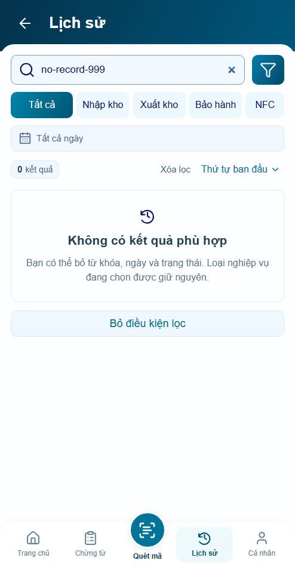

Lịch sử r22 — ít thao tác, giữ đúng ngữ cảnh
Đã bổ sung nhớ bộ lọc riêng cho sáu trang, khoảng ngày nhanh, dấu lọc đang bật và hướng xử lý khi không có kết quả. Giao diện mới chờ bạn review.
Mở ứng dụng · Báo cáo kiểm chứng
Bộ lọc — trước và sau cùng điều kiện
Trước
Sau — chọn nhanh chỉ thay bản nháp
Đang lọc và không có kết quả
Chấm báo nhỏ, ngày và trạng thái rõ ràng
Bỏ điều kiện lọc, giữ nghiệp vụ đang chọn
Cùng component trong các trang nghiệp vụ